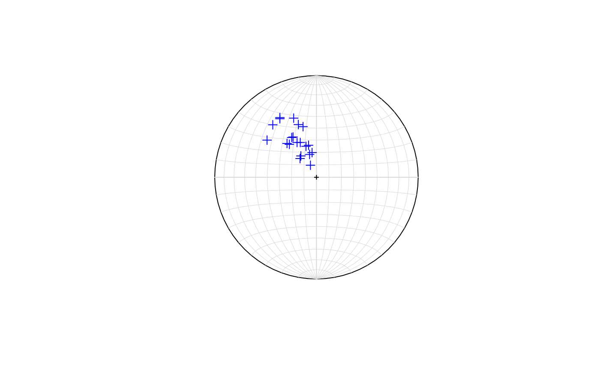
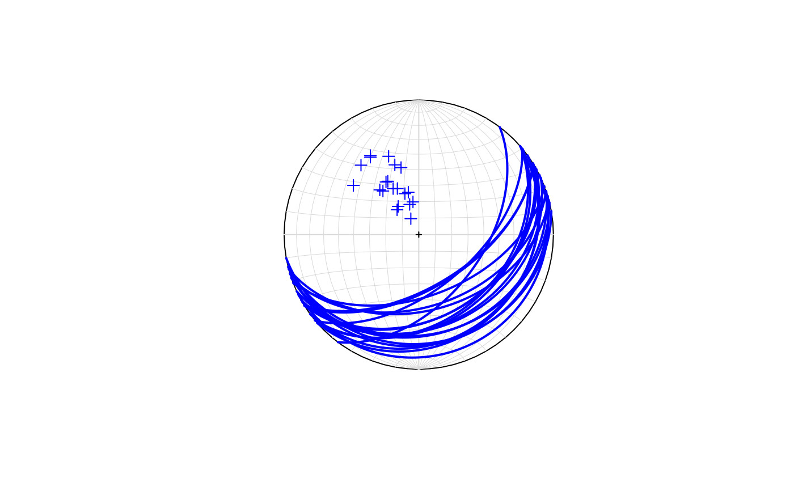

Draws the poles to planes (great circles) on an equal area stereonet.
stereo_pole(dir, dip, points.col = "blue", points.shape = 3, add = FALSE)
| dir | A vector of dip directions in degrees |
|---|---|
| dip | A vector of dip angles in degrees |
| points.col | Color for the poles |
| points.shape | Shape value (pch) for the poles |
| add | A logical indicating to add or not the poles to an existing plot |
A stereonet plot
This can be added to a stereonet from stereo_plane()
dip.dir <- runif(min = 120, max = 170, n = 20) dip <- runif(min = 10, max = 60, n = 20) stereo_pole(dip.dir, dip)#> $x #> [1] -0.26625257 -0.10295111 -0.28932942 -0.23018702 -0.07772999 -0.04308744 #> [7] -0.15299482 -0.35943596 -0.15918209 -0.48551328 -0.16114046 -0.17786993 #> [13] -0.06748998 -0.05902373 -0.19050435 -0.24358120 -0.35933455 -0.42927491 #> [19] -0.22392486 -0.13172188 #> #> $y #> [1] 0.3238909 0.3043326 0.3325374 0.3961455 0.3147355 0.2428903 0.2097568 #> [8] 0.5754808 0.3421636 0.3654102 0.1842941 0.5181177 0.2243330 0.1184067 #> [15] 0.3423092 0.3912741 0.5872107 0.5159161 0.5817264 0.4979647 #>stereo_pole(dip.dir, dip, add = TRUE)#> $x #> [1] -0.26625257 -0.10295111 -0.28932942 -0.23018702 -0.07772999 -0.04308744 #> [7] -0.15299482 -0.35943596 -0.15918209 -0.48551328 -0.16114046 -0.17786993 #> [13] -0.06748998 -0.05902373 -0.19050435 -0.24358120 -0.35933455 -0.42927491 #> [19] -0.22392486 -0.13172188 #> #> $y #> [1] 0.3238909 0.3043326 0.3325374 0.3961455 0.3147355 0.2428903 0.2097568 #> [8] 0.5754808 0.3421636 0.3654102 0.1842941 0.5181177 0.2243330 0.1184067 #> [15] 0.3423092 0.3912741 0.5872107 0.5159161 0.5817264 0.4979647 #>